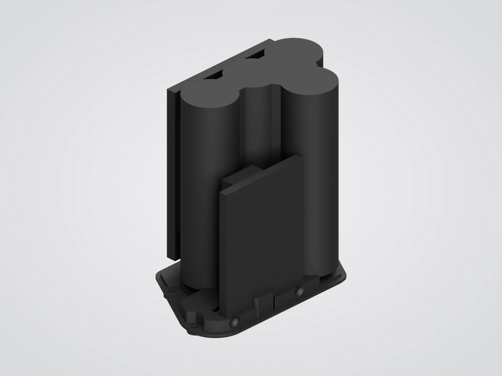
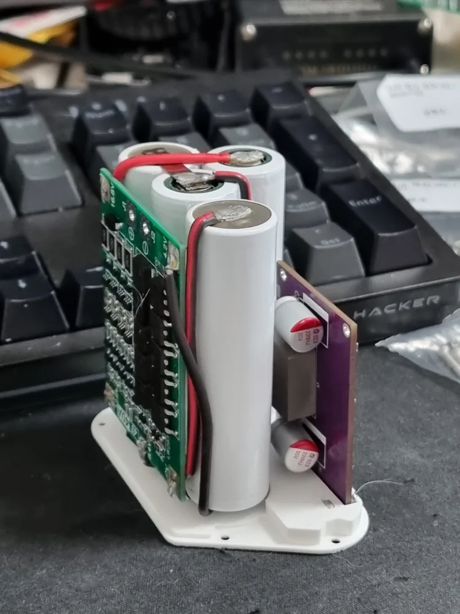
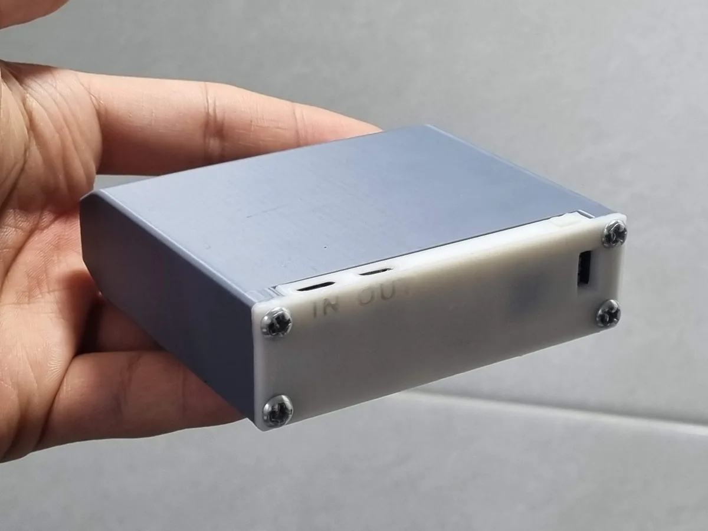

4S 보조배터리
4S 1P POWER BANK
보조배터리 안에는 리튬 셀, 셀을 관리하는 보호 회로(BMS), 충전과 방전을 맡는 PCB가 들어갑니다.이 세 종류의 부품을 작은 공간에 넣고 발열, 내구성, 배선 등 많은 요소를 고려하였습니다.셀 4개를 직렬로 묶은 4S 1P 구성으로 시제품을 수십 개 만들었고, 가장 안정적인 설계로 완성된 45W 버전은 9개월 동안 실제로 사용했습니다.

45W Power Bank
보조배터리 안에는 리튬 셀, 셀을 관리하는 보호 회로(BMS), 충전과 방전을 맡는 PCB가 들어갑니다.이 세 종류의 부품을 작은 공간에 넣고 발열, 내구성, 배선 등 많은 요소를 고려하였습니다.셀 4개를 직렬로 묶은 4S 1P 구성으로 시제품을 수십 개 만들었고, 가장 안정적인 설계로 완성된 45W 버전은 9개월 동안 실제로 사용했습니다.
45W Power Bank
설계 모델의 부피입니다. 무엇이 개선되었는지 아래에서 설명하겠습니다.
만든 것안이 들여다보이는 투명 케이스 전자기기처럼 만들고 싶었습니다.그래서 4S 1P 셀 팩과 충방전 모듈을 가로로 배치하여 부품이 보이도록 만들고 윗면 전체를 2mm 투명 PC 판으로 덮었습니다.셀 보호는 전동 드릴 배터리용 BMS가, 충전과 출력은 100W PCB가 맡았습니다.100W 충방전 모듈 아래엔 방열을 위한 구멍도 뚫었습니다.
문제목표를 이루기 위해 진행한 설계로 인해 들고 다니기에는 너무 크고 무거웠고, 하우징도 약했습니다.방열을 위한 구멍으론 다양한 이물질이 들어왔고 주머니에 넣지도 못하는 휴대품이 되었습니다.투명 PC판을 가공할 비용도 고등학생에게는 부담이었습니다.결국 실제로 쓸 수 없는 프로토타입으로 끝났습니다.

Power Bank V1 설계
만든 것이번엔 작고 실용적이고 튼튼한 보조배터리를 만들려고 했습니다.그래서 셀 4개를 벌집 모양으로 뭉치고, 한쪽에는 BMS, 남는 면에 PCB를 배치, 위에 하우징을 덮었습니다.부품을 뭉치고 남는 공간을 활용하니 부피가 첫 버전의 약 62%로 줄었습니다.
문제설계 실력 부족으로 인해 셀과 기판이 여전히 하우징 벽에서 떨어져 있어, 열이 빠져나갈 길이 안쪽 공기뿐이었습니다.PLA는 60℃ 안팎에서 녹기 시작하는 소재라 하우징이 녹고, 뜨거워지면 충전 속도가 제한됐습니다.내구성도 여전히 아쉬웠습니다.

내부 모습.


앞선 두 버전에서 겪은 문제를 모두 반영한 버전입니다.
열기판 위에 써멀 패드를 붙여 하우징 벽에 닿게 했습니다.충방전 모듈의 열은 써멀 패드를 거쳐 하우징으로 빠지고, 안쪽에 넓게 붙인 구리 테이프가 그 열을 하우징 전체로 퍼트립니다.
내구성공중에 떠 있던 충방전 모듈을 제대로 고정하고, 셀은 내부 부품과 하우징이 함께 잡아 흔들리지 않게 했습니다.하우징 조립 방식도 바꿔 충격에 훨씬 강해졌습니다.
크기셀을 눕혀 두 줄로 넣고, 큰 BMS 대신 셀 전압만 맞춰 주는 작은 밸런싱 보드를 넣어 공간을 줄였습니다.보호 기능이 줄어 안정성은 떨어지지만, 판매용이 아니라서 이 방식을 골랐습니다. 대신 셀 전압을 주기적으로 확인하고 있습니다.


바꾼 것Power Bank V3와 비슷한 설계에서 셀과 PCB를 붙잡는 구조를 단순화하고 크기를 키웠습니다.충방전 모듈도 오버스펙인 100W 대신 버튼이 달려 편한 45W로 변경했습니다.
결과셀 고정 부품이 줄면서 폭이 약 8mm 줄었고, 망가질 곳이 줄고 충격을 받는 부분이 두꺼워져 훨씬 튼튼해졌습니다.조금 더 나은 방열을 위해 하우징을 PCB에 밀착시키고 열 받는 부분의 두께를 낮췄습니다.현재 9개월째 실제로 사용 중입니다.옆면의 핀은 방열을 기대하고 넣었지만 효과가 크지 않아, 지금은 디자인 요소에 가깝습니다.
만든 것셀 2개를 병렬로 묶은 작은 보조배터리입니다.5V 3A 충방전 모듈을 회색 출력 케이스에 넣고, 모듈의 5V 출력에 USB-C 단자를 직접 이었습니다.
문제기기를 연결해도 충전이 시작되지 않았습니다.USB-C는 전원을 주는 쪽이 CC 핀에 풀업 저항(Rp, 10~56kΩ)을 달아 전원이 있다는 것을 알려야 상대 기기가 전기를 받습니다.단자만 잇고 이 저항을 빠뜨린 것이 원인으로 보입니다.

1S 2P 15W 보조배터리
만든 것충전과 출력이 모두 되는 보드라고 생각하고 하우징을 만들었습니다.뚜껑 안쪽에는 구리 테이프도 붙였습니다.
문제실제로는 충전 입력만 되는 보드여서, 하우징까지 완성하고도 보조배터리로는 쓸 수 없었습니다.


셀 3개를 직렬로 묶은 3S 45W 보조배터리의 회로와 케이스를 설계하고 있습니다.